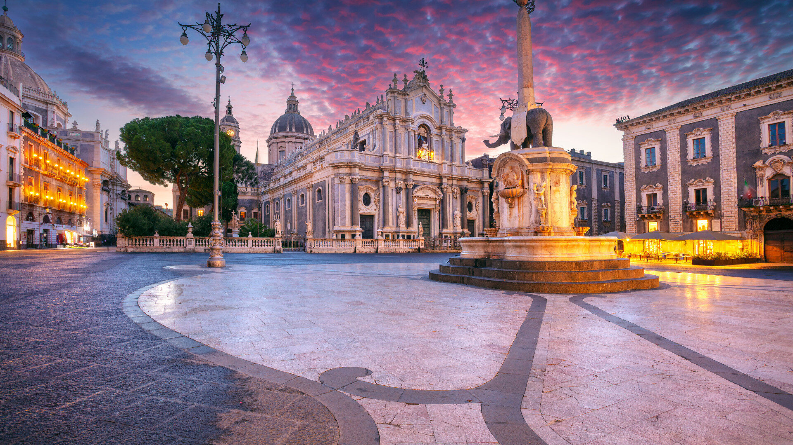
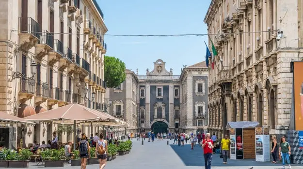
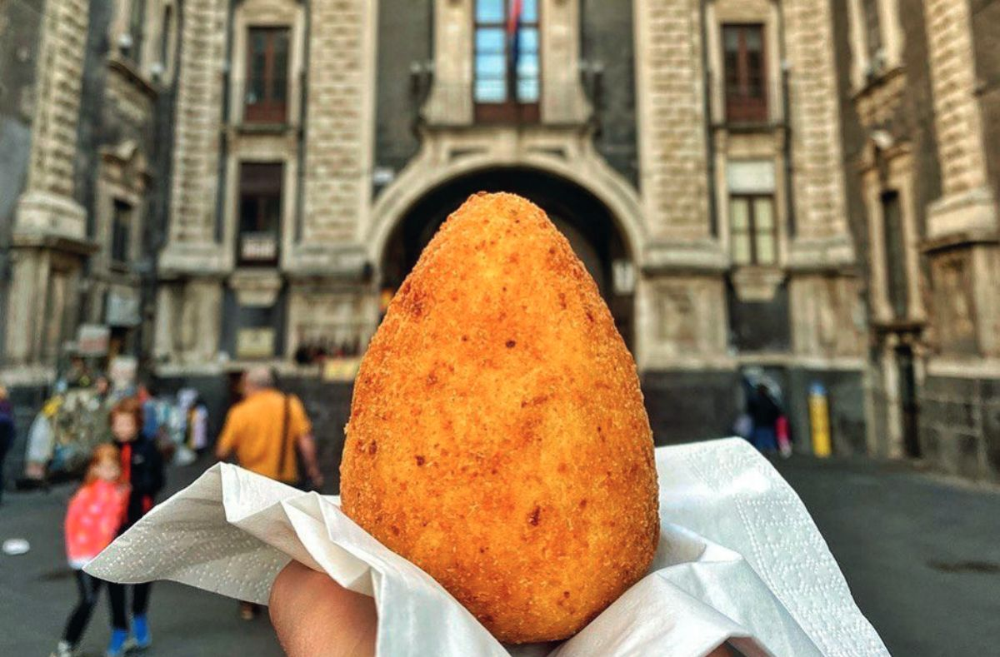
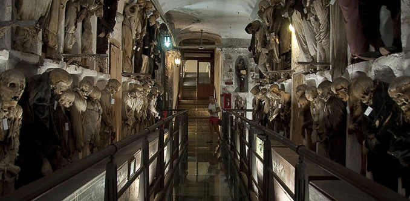
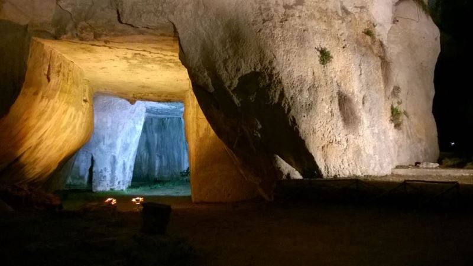
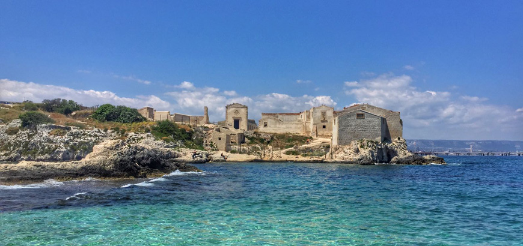
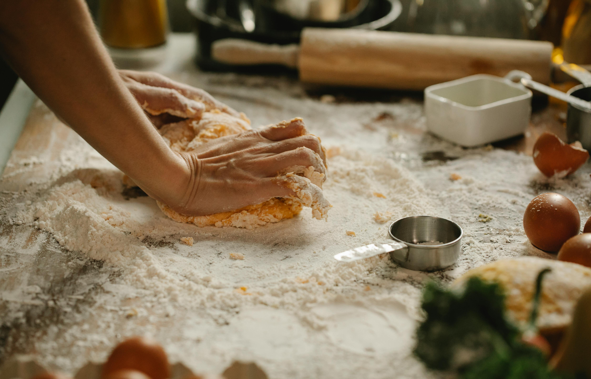
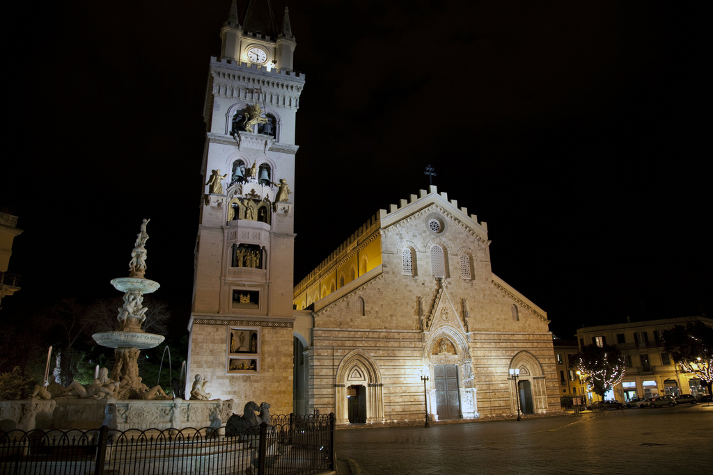

ATTIVITÀ

TOUR CATANIA

Tour guidato di Catania
Un tour guidato, dove sarà possibile scoprire le principali bellezze del centro della città di Cattania.

Tour Gastronomico
Un tour gastronomico a Catania è un viaggio tra i sapori autentici dello street food siciliano, esplorando mercati storici come la "Pescheria" e il centro barocco.
TOUR PALERMO

Oltre il velo: Catacombe e Cimiteri di Palermo
Il tour illustrerà il celebre cimitero di gallerie sotterrane dei Frati Cappuccini di Palermo

Tour a piedi NO Mafia
Scopri di più sulla mafia e sul movimento civico contro il suo potere. Partecipa a un tour a piedi guidato nel centro storico di Palermo. Scopri i principali monumenti della città e gli sforzi di resistenza alla mafia locale.
TOUR SIRACUSA

LE PRIGIONI DI PIETRA
In una suggestiva atmosfera notturna, scoprirete la storia della Latomia del Paradiso e delle meravigliose grotte artificiali in essa custodite: la Grotta dei Cordari e l'Orecchio di Dionisio

Le strade del tonno
Il tour consentirà ai visitatori di scoprire le meraviglie nascoste nel tratto costiero tra l’isola di Ortigia e Santa Panagia.
TOUR MESSINA

Tour di Messina e lezione di cucina
Scopri le strade storiche di Messina con un tour guidato, esplora i mercati e le botteghe artigiane, poi partecipa a una lezione pratica di cucina siciliana, preparando un piatto tradizionale con il vino regionale.

Messina Magica
Una passeggiata serale guidata che rivela il lato più oscuro della città, ma anche la sua resilienza, la sua cultura e la sua anima. Ti immergerai nel folclore popolare e in eventi tragici realmente accaduti, che si dice dimorino nell'ombra.